دستیار هوشمند خرید و فروش؛
متصل به خریداران و تأمینکنندگان مناسب
۱ معماری محصول — سه لایه
۲ معکوس بنیادی نسبت به Design 3
Design 3 — «شبکهٔ تدریجی»
- شبکه در لایهٔ ۳ پنهان بود؛ با استفاده آشکار میشد
- آنبوردینگ ابزار-محور؛ وعدهٔ شبکه فقط پانویس بود
- حالت خالی: «هنوز پیدا نکردیم» (صداقت محض)
- خانهٔ عملیاتی: وضعیت و قدم بعدی
- کشف از مسیر تابلوی تأمین و صفحات عمق
Design 4 — «شبکهٔ بهکارگرفته»
- شبکه در وعده آشکار، در تعامل نامرئی — هرگز صفحهای به نام «شبکه» نیست
- آنبوردینگ وعدهمحور: «خریداران جدید هم برایت پیدا میکنیم» روی خود کارت
- حالت خالی = نقشهٔ راه: «بعدش چه میشود؟» سه قدم تا اولین کشف
- Assistant Home: دستیار با صدای خودش خلاصه میکند + یک اتفاق مهم (هیرو)
- کشف درون-کار: استریپ فیروزهای داخل کالا / دفتر / کاتالوگ / درخواست + «لحظهٔ پیدا کردیم» بعد از هر ثبت
در هر دو، موتور تطبیق قلب سیستم است و دلیل هر پیشنهاد نوشته میشود. تفاوت در «لحظه و زبانِ ظهور» است: D3 انضمامی و صبور، D4 بیدرنگ و درون-جریان.
۳ معماری اطلاعات و ناوبری
| جایگاه | دستیار فروش | دستیار خرید |
|---|---|---|
| تببار پایین (۴ آیتم) | خانه · کالاها · درخواستها · پروفایل | خانه · دفتر خرید · درخواستها · پروفایل |
| خانه | Assistant Home: نوار دستیار + هیرو + کارهای من + درخواستهای مهم + خریداران جدید | Assistant Home: نوار دستیار + هیرو + کارهای من + خبرها + تأمینکنندگان جدید |
| خارج از ناوبری (از دلِ کار) | خریداران (مشتریان من + جدید) · تأمینکنندگان (من + جدید) · کاتالوگ · قلم دفتر · جزئیات درخواست | |
| در هدر | سوییچ دستیار (خرید/فروش) — کمرنگ، همیشه در دسترس | |
نقاط تزریق شبکه (Network Integration Points)
| صفحه | هدف اصلی (یک سؤال) | شبکه در بافتِ همان صفحه |
|---|---|---|
| خانهٔ فروش | امروز چه مهم است؟ | هیرو «۲ فرصت جدید» + بخش خریداران جدید |
| کالاها | چه میفروشم؟ | استریپ «خریداران مرتبط» + بج تعداد خریدار روی هر کالا |
| صفحهٔ کالا | این کالا را چطور مدیریت کنم؟ | «خریداران این کالا» + دلیل هر کدام |
| افزودن کالا | ثبت کنم | لحظهٔ جادویی: «۱ خریدار جدید برای این کالا پیدا کردیم» |
| کاتالوگ | عرضه و اشتراک | «خریداران مرتبط با این کاتالوگ» + موتور رشدِ اشتراک |
| درخواستها (فروش) | چه کسی قیمت خواسته؟ | «فرصتهای مشابه» در پایین |
| خانهٔ خرید | امروز چه مهم است؟ | هیرو «۳ تأمینکنندهٔ جدید» + کارتهای دلیلدار |
| دفتر خرید | چه چیزهایی باید بخرم؟ | استریپ «تأمینکنندگان این خرید» + بج تعداد روی هر قلم |
| قلم دفتر | این نیاز را چطور تأمین کنم؟ | «تأمینکنندگان این کالا»: من (خاکستری) + پیدا کردیم (با دلیل) |
| افزودن نیاز | ثبت کنم | لحظهٔ جادویی: «۴ تأمینکنندهٔ مرتبط پیدا کردیم» |
| درخواست قیمت | قیمت بگیرم | تفکیک شفاف: «تأمینکنندگان من + پیدا کردیم» — انتخاب با کاربر |
| درخواستها (خرید) | کدام قیمت بهتر است؟ | پاسخها کنار هم؛ بهترین با قاب زمردی + پیشنهاد افزودن تأمینکنندهٔ جدید |
| روز اول (خالی) | از کجا شروع کنم؟ | نقشهٔ «بعدش چه میشود؟» — سه قدم تا اولین کشف |
وقتی کاربر هیچچیز ندارد، این بخشها نمایش داده نمیشوند — حالت خالی به آنبوردینگ تبدیل میشود، نه به صفحهٔ مرده.
۴ جریانهای اصلی کاربر
جریان طلایی فروشنده — «ثبت کن؛ ما پیدا میکنیم»
جریان طلایی خریدار — «نیاز را بنویس؛ ما تأمین میکنیم»
حلقهٔ رشد — Sharing
۵ آنبوردینگ و حالت خالی
۶ معماری خانه — Assistant Home
خانه، Dashboard شلوغ نیست؛ گفتگوی کوتاهی با دستیار است. کاربر در چند ثانیه میفهمد: چه اتفاق مهمی افتاده؟ چه کاری باید انجام دهد؟ iMach چه چیز جدیدی برایش پیدا کرده؟
| بلوک | محتوا | قاعده |
|---|---|---|
| نوار دستیار | «دستیار فروش — ۱ درخواست قیمت و ۲ فرصت جدید منتظر توست» | صدای اولشخص دستیار؛ خلاصهٔ وضعیت در یک خط |
| هیرو (یک اتفاق مهم) | «۲ فرصت جدید برای فروشت» + CTA + شمارندها | فقط یکی — مهمترین. هرگز دو هیرو |
| کارهای من | کالاها · کاتالوگ · مشتریان من (خریدار: دفتر خرید · درخواستها · تأمینکنندگان) | سه ابزار؛ هرکدام یک mini-state |
| درخواستهای مهم / خبرها | پاسخنشدهها، خبر قیمت بهتر | حداکثر ۲ رج |
| خریداران/تأمینکنندگان جدید | ۲ کارت با دلیل | همیشه با «چرا» — بدون Feed بیدلیل |
۷ استراتژی Progressive Disclosure
| بلوغ کاربر | چه میبیند | چه چیزی هنوز مخفی است |
|---|---|---|
| روز اول (خالی) | یک CTA + نقشهٔ سهقدمی | همه چیز دیگر |
| شروعکننده (۱-۳ قلم/کالا) | ابزار + استریپهای شبکهای + لحظهٔ «پیدا کردیم» | آمار عمیق، نمودار، تنظیمات پیشرفته |
| فعال (در حال خرید/فروش واقعی) | درخواستها، مقایسهٔ قیمتها، گفتگو، دعوت | گزارشهای تحلیلی |
| حرفهای | شاخصهای کالا، قیمتهای معوق، نمای دسکتاپ کامل | — |
UI با بلوغ کاربر رشد میکند؛ قابلیتها حذف نمیشوند، فقط زمان و جای ظهورشان مدیریت میشود.
۸ الگوی تعاملِ پیدا کردن (Matching Interaction Patterns)
| الگو | شکل | مثال |
|---|---|---|
| پیدا کردیم | هیرو / reveal / استریپ فیروزهای | «۲ فرصت جدید برای فروشت» |
| خریداران/تأمینکنندگان جدید | کارت با بج «پیدا کردیم» | پخش کاوه — روغن میخرد · همدان |
| چرا این پیشنهاد؟ | دکمهٔ بازشونده روی هر کارت | «چون: این کالا را میخرد، همدان است، حجمش با حداقل سفارشت جور است» |
| من / پیدا کردیم | دو بخش جدا: بلوک خاکستری «من» + کارتهای فیروزهای | در تأمینکنندگان، RFQ و قلم دفتر |
| انتخاب با کاربر | چکباکس در فرم RFQ | «۲ همکار من + ۳ پیشنهاد iMach — خودت انتخاب کن» |
| فرصت مشابه | بخش پایین صفحات درخواست/کالا | «۲ خریدار دیگر همین روزها درخواست مشابه دادهاند» |
زبان ممنوع / زبان ترجیحی
۹ گالری صفحات — ۱۹ صفحهٔ زنده و قابل کلیک
روی هر کارت کلیک کن تا صفحهٔ زندهٔ همان UI در نمونهٔ تعاملی باز شود (index.html):
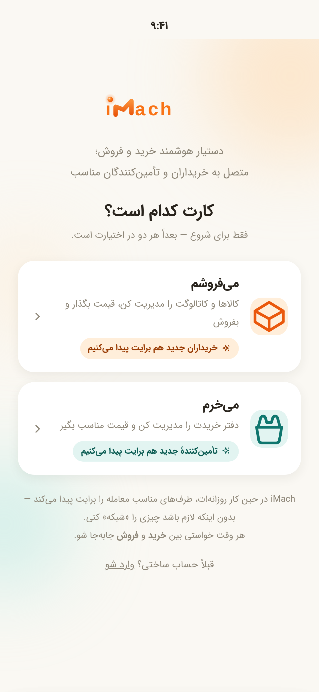
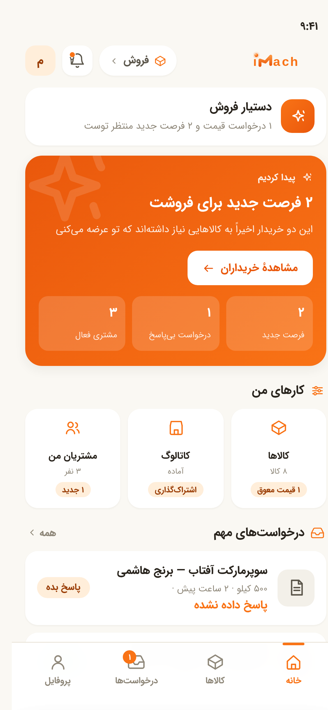
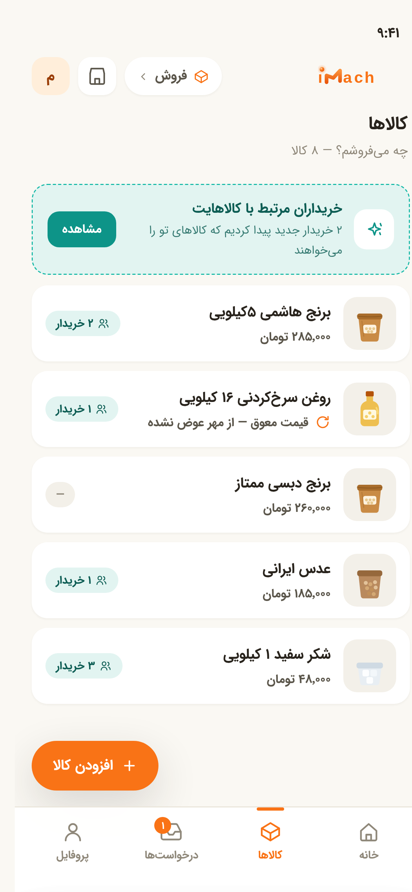
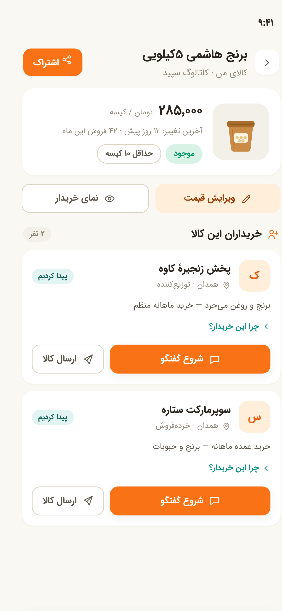
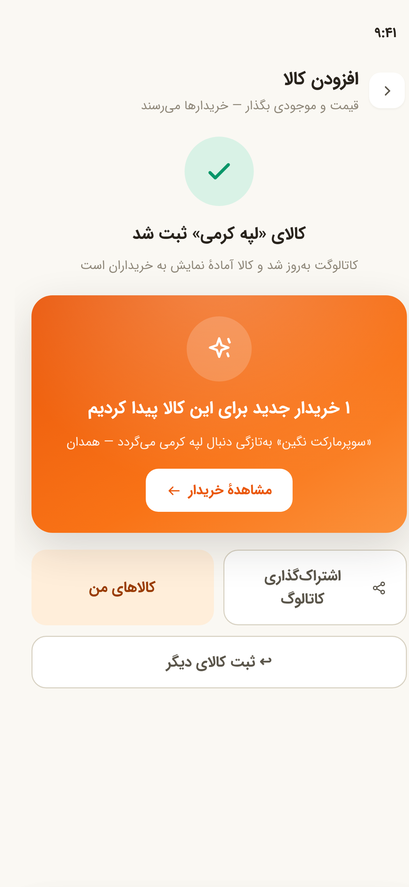
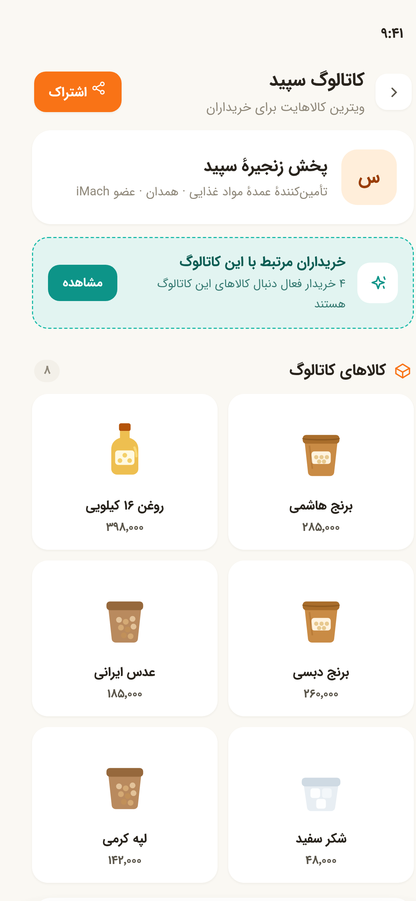
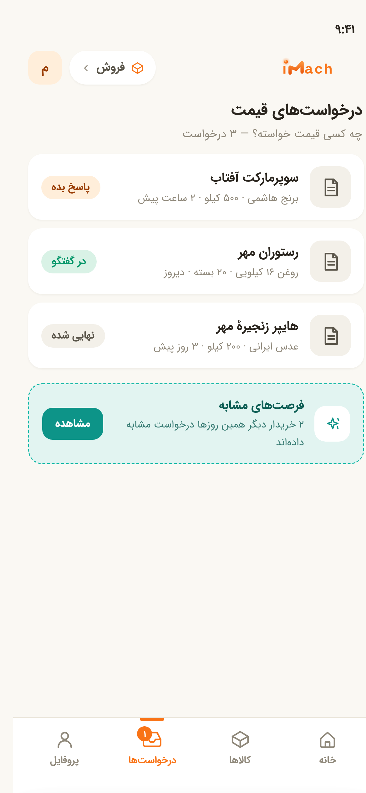
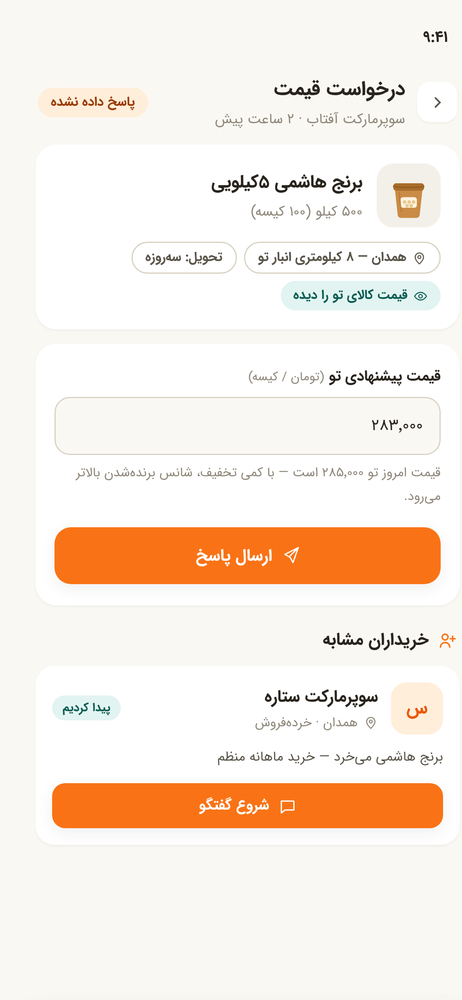
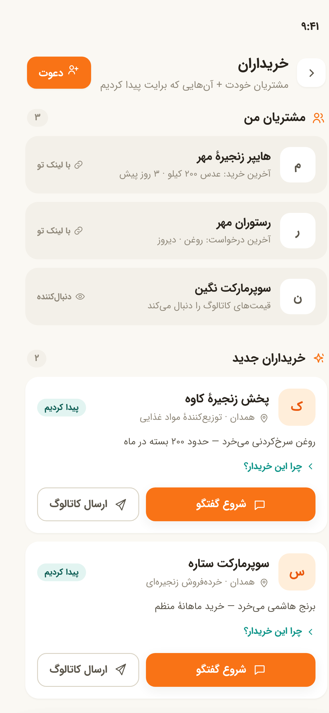
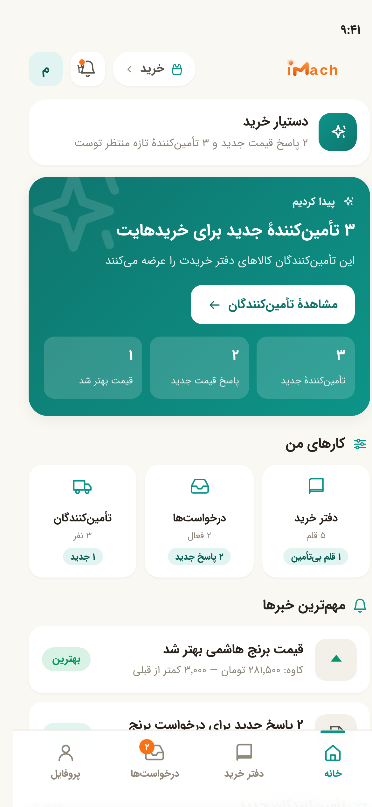
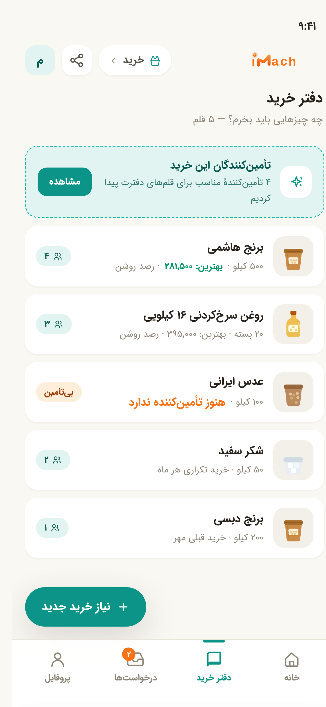
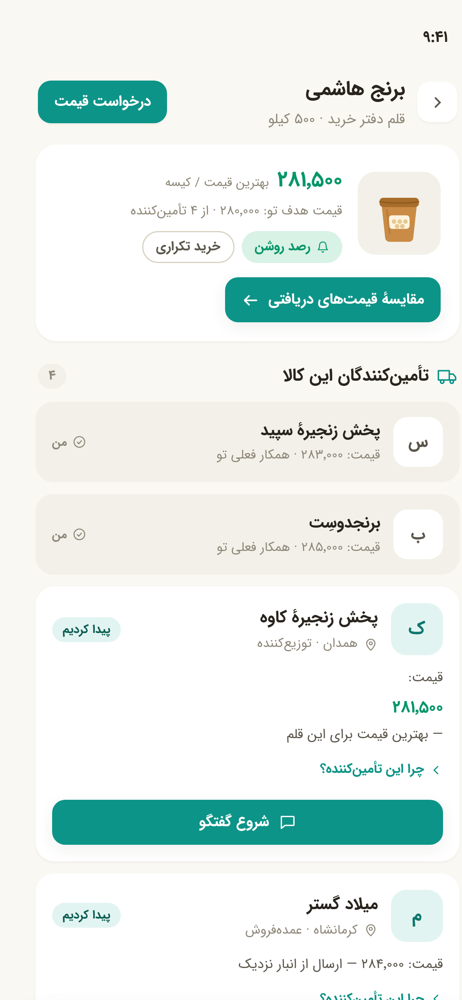
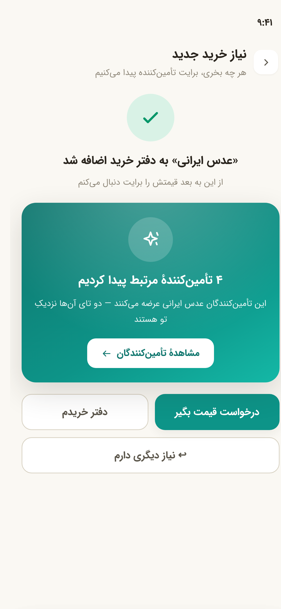
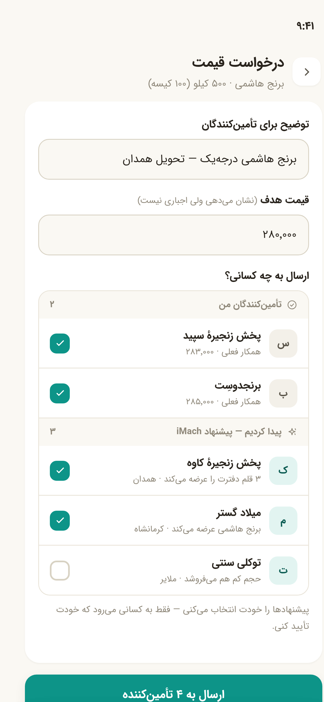
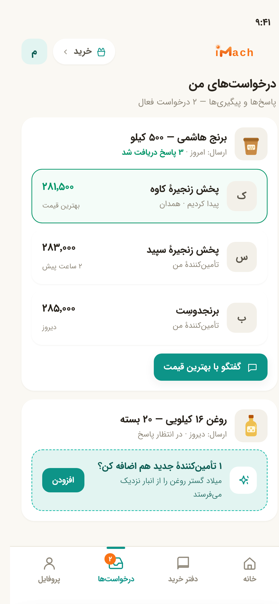
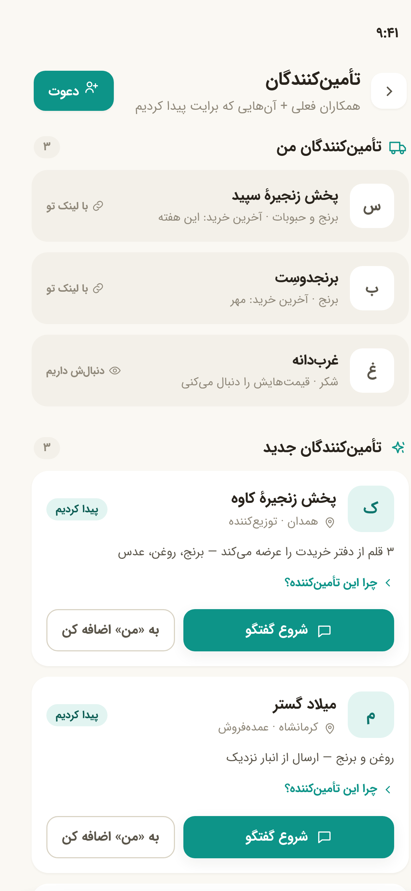
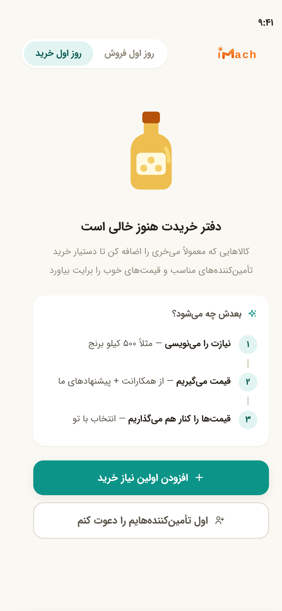
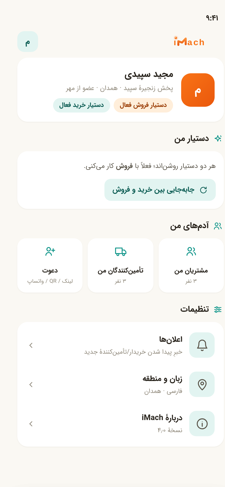
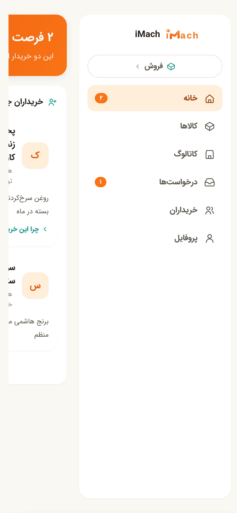
۱۰ نگاشت قواعد بریف به صفحات
| قاعدهٔ بریف | پیادهسازی در Design 4 |
|---|---|
| شبکه در Value Proposition آشکار، در Interaction ساده | آنبوردینگ §۰۱ (وعده روی کارت) + همهٔ صفحات (هیچ «صفحهٔ شبکه» نیست) |
| iMach در حین کارِ کاربر شبکه را فعال میکند | §۰۵ لحظهٔ «پیدا کردیم» بعد از ثبت + استریپهای شبکهای درون صفحات |
| هر صفحه یک هدف اصلی | page-head با یک سؤال: «چه میفروشم؟» / «چه باید بخرم؟» / «چه کسی قیمت خواسته؟» |
| Home = Assistant Home نه Dashboard | §۰۲/§۱۰: نوار دستیار + یک هیرو + سه ابزار + ۲ رج درخواست |
| «دفتر خرید» به جای «لیست خرید» | §۱۱/§۱۲ + ناوبری خریدار |
| کاتالوگ ابزار است نه محصول | §۰۶: از کالاها و کالای من باز میشود؛ ارزش در «خریداران مرتبط» |
| Sharing موتور رشد | شیت اشتراک ۴کاناله + شماره؛ §۰۶ نوار «موتور رشد»؛ صفقه در بافت |
| پیشنهاد همیشه با Context | «چرا این پیشنهاد؟» بازشونده روی همهٔ کارتها + جملهٔ «چون:» |
| دوری از Feed و Social UI | هیچ feed scroll نیست؛ هر کارت دلیل دارد؛ حداکثر ۲ کارت در خانه |
| Network Effect از دلِ استفاده | کالا → خریدار؛ نیاز → تأمینکننده؛ اشتراک → رابطه (بدون follow/connection) |
| Empty State → Onboarding | §۱۷: نقشهٔ سهقدمی + CTA جایگزین «اول دعوت کنم» |
| سورپرایز بخشی از محصول | reveal گرادیانی بعد از هر ثبت — قابل مشاهده با دکمهٔ دمو |
| نه CRM / نه Marketplace / نه Social | مشتریان من = آخرین خرید/درخواست (نه pipeline)؛ هیچ سبد خریدی؛ هیچ feedی |
| UX Writing نتیجهمحور | واژهنامهٔ ترجیحی/ممنوع §۸ — «پیدا کردیم» به جای «موتور تطبیق» |
| Mobile First | ۱۸ صفحهٔ ۳۹۰×۸۴۴ + یک دسکتاپ؛ CTA اصلی هر صفحه واضح؛ جزئیات در sheet |
| هویت بصری فعلی | #F97316 فروش + فیروزه خرید/کشف + IRANSans + RTL + فضای سفید — خلوتتر از D3 (بج کمتر، هیرو بزرگتر) |
۱۱ تستهای طراحی — پرسشهای بریف
- ۵ ثانیه: آنبوردینگ + تگلاین: «دستیار هوشمند خرید و فروش؛ متصل به خریداران و تأمینکنندگان مناسب» — ماهیت و وعده در یک نگاه.
- فروشنده میفهمد خریدار پیدا میکنیم؟ بله — روی کارت آنبوردینگ، در هیرو، در استریپ کالاها، در لحظهٔ بعد از ثبت.
- خریدار میفهمد تأمینکننده پیدا میکنیم؟ بله — همانها در آینهٔ خرید.
- مجبور به فهمیدن Network؟ خیر — هیچ صفحه/مفهومی به نام شبکه، تطبیق، follow وجود ندارد.
- شبیه CRM؟ خیر — مشتریان من فقط «آخرین خرید/درخواست» است، نه pipeline/وظیفه/یادآور.
- شبیه Marketplace؟ خیر — سبد خرید و لیستینگ نیست؛ Assistant + درخواست قیمت + گفتگو.
- شبیه Social؟ خیر — feed نیست؛ هر پیشنهاد reason-دار و محدود است.
- AI واقعی در workflow؟ بله — پیشنهاد دلیلدار، قیمتِ بهتر، قلم بیتأمین، قیمت معوق: نتیجهٔ موتور در بافت کار.
- Matching دلیل دارد؟ بله — «چون:» روی همهٔ کارتها؛ همیشه کالا/جغرافیا/حجم.
Design 2 و Design 3 دستنخورده و همزمان موجودند · نسخهٔ تعاملی: index.html · این سند صرفاً مرجع است